MFaktor Executive Club
Доимий аъзо ва спикер.
Суғурта ва молия мутахассиси
Суғурта ва бизнес соҳасида 20 йилдан ортиқ тажриба. Шахсий ривожланиш, касб танлаш, молия ва ислом молияси ҳақида ёзаман ва маърузалар ўқийман.

Мен ҳақимда
Йигирма йилдан буён суғурта соҳасида ишлайман: давлат назоратидан тортиб, етакчи суғурта компанияларини бошқаришгача. Японияда ҳаёт суғуртаси бўйича профессионал таълим олганман.
Талабалар ва ёшлар учун мастер-класслар ўтказаман, тадбиркорлар клубларида спикер сифатида тажриба улашаман. Telegram каналимда ҳаёт, оила, вақт қадри, муносабатлар ва ўз устида ишлаш ҳақидаги фикрларимни ёзиб бораман.
Иш фаолияти
Профессионал фаоллик
Доимий аъзо ва спикер.
Тадбиркорлар ва соҳа эгалари клубининг Директорлар кенгаши раиси.
Спикер.
Ташкилотчи. Форум меҳмонлари орасида Игорь Манн, Michael Bang ва Jordan Belfort бўлган.
Шариатга мувофиқ суғурта — такафул бўйича халқаро конференция ва вебинарларда маърузалар.
Тошкент телеканалидаги кўрсатув меҳмони.
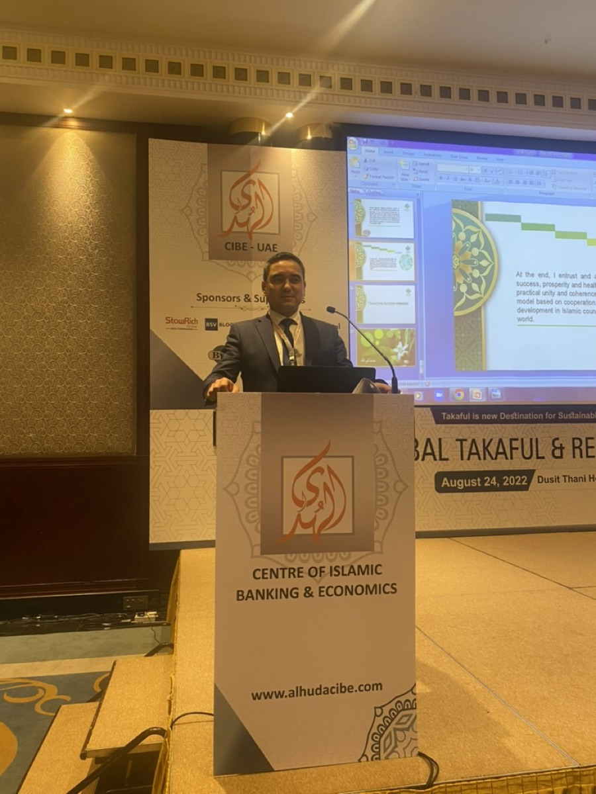
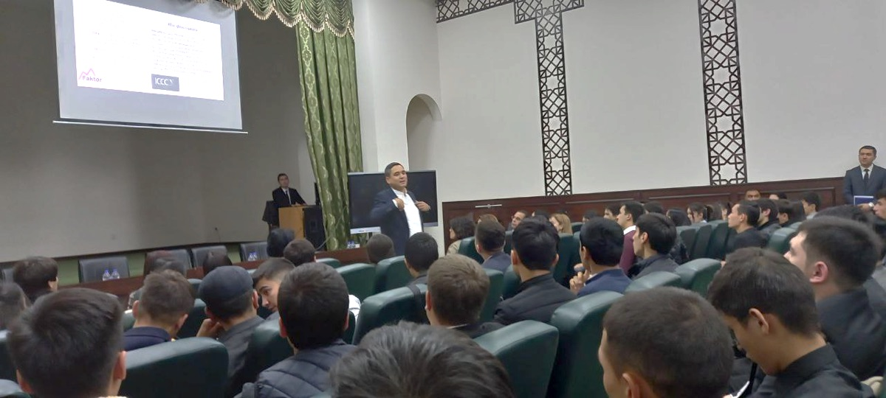
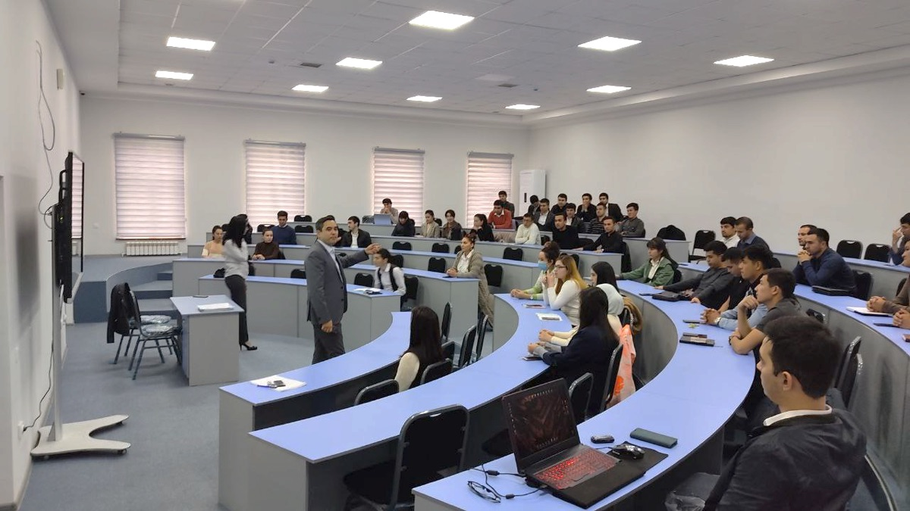
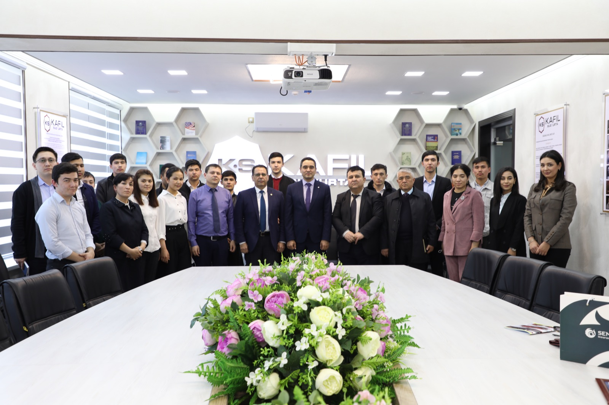
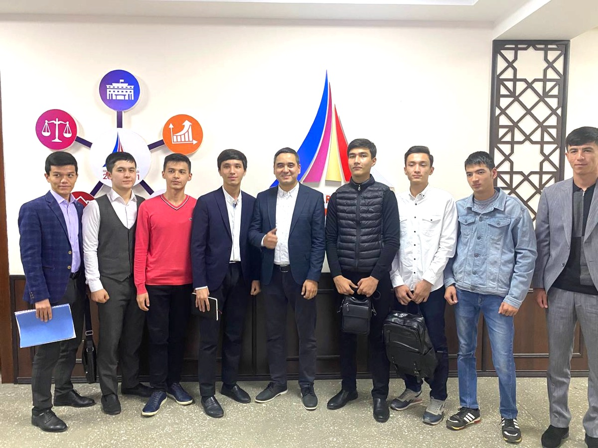
Мастер-класслар
Университет ва ўқув марказларида талабалар учун ўтказиладиган мастер-класс. Мавзулар: мақсад ва миссия, вақт қадри, нетворкинг, шахсий молия, ноодатий фикрлаш, устоз ва шогирд, доимий ўрганиш, лидерлик.
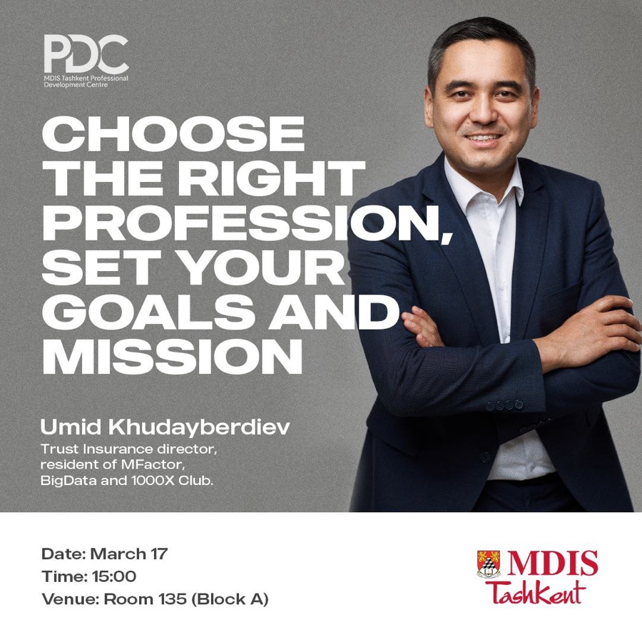
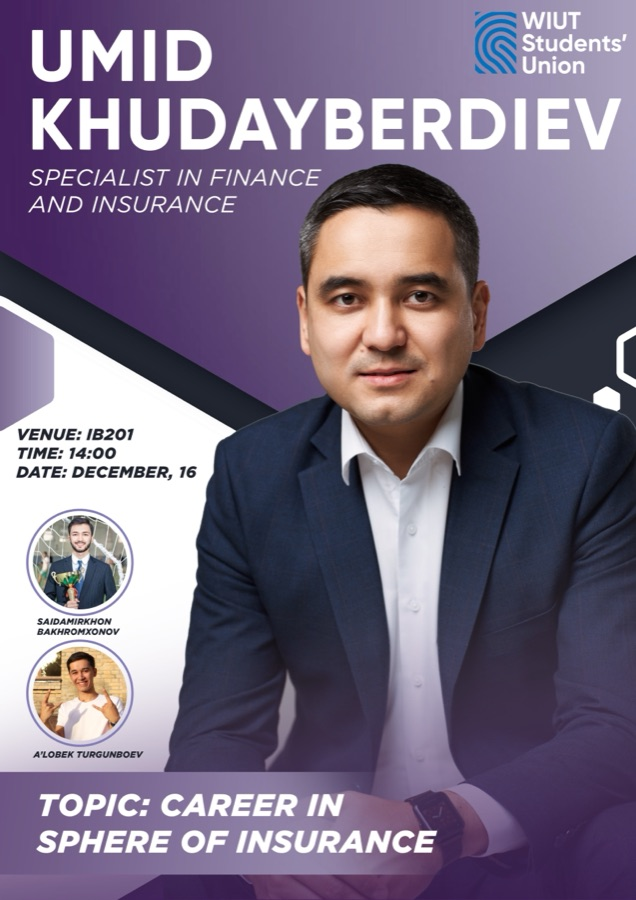
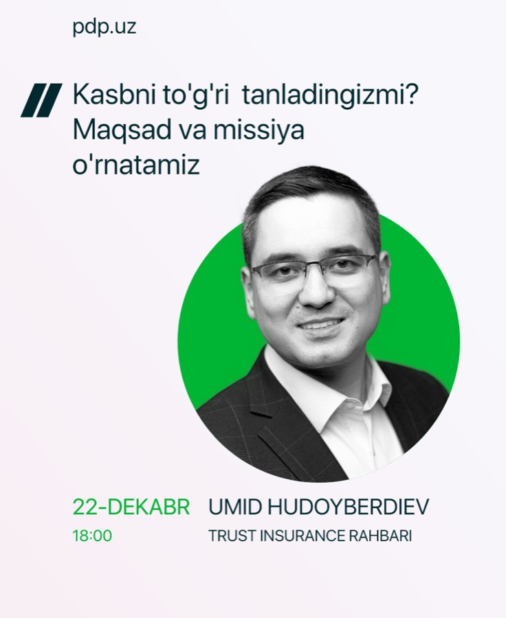
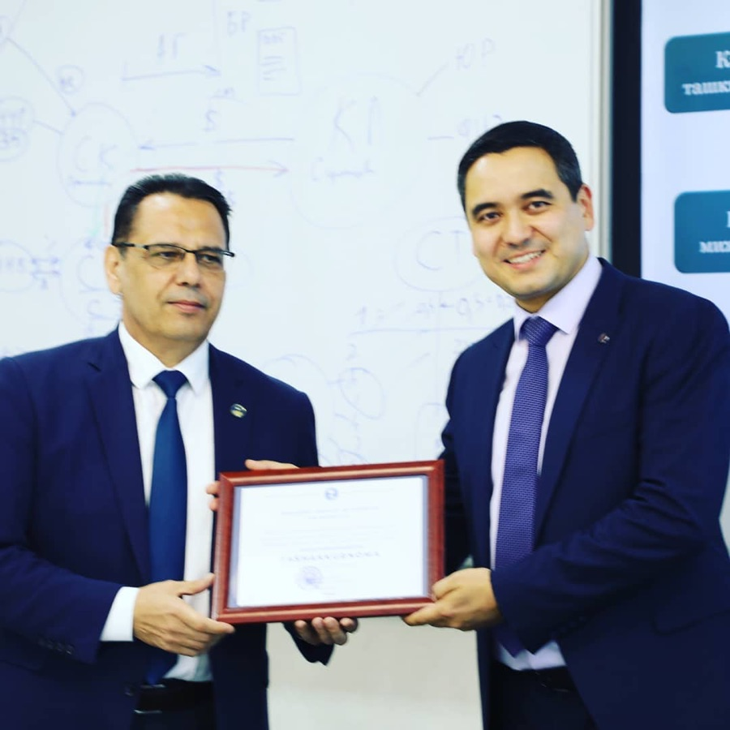
Блог
Kun böyi mehnat qilib, çöntakni töldirish mumkin. Lekin keçasi uyga qaytganda içingizda çuqur bir böşliq qolayotgan bölsa, demak, gap faqat pulda emas. Insonga faqat qorin töqligi…
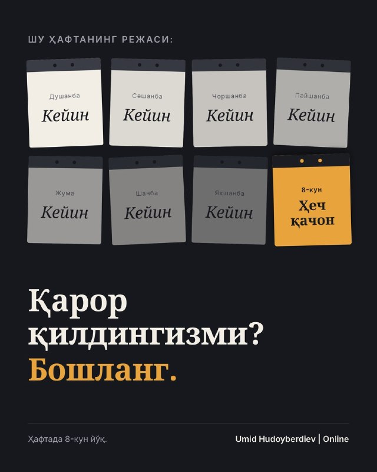
Бошланг. Қарор билан амал орасида энг хавфли масофа бор. Ғоялар айнан шу масофада ўлади. Мен ўзим узоқ хаёл суриб ўтирмайман. Фикр келдими, қарор қилдимми, шу заҳоти амалга…
«Инсоннинг қандайлигини билишни истасангиз, унинг яқинлари билан муносабатига қаранг». Бу оддий кузатув эмас. Аслида, у инсон ахлоқи ва тарбиясининг энг муҳим мезонларидан бирини…
Чунки гап шунчаки инсоннинг ўзида эмас. У билан боғлиқ хотиралар, суҳбатлар, одатлар, бирга ўтказилган кунлар бор. У ҳаётингизнинг бир қисмига айланиб қолган бўлади. Бундай…
Биз кўпинча имкониятларни бой берганимиз учун эмас, улардан фойдаланишни кечиктирганимиз учун орқада қоламиз. «Ҳали вақт бор». «Эртадан бошлайман». «Бироз тайёргарлик кўрай»…
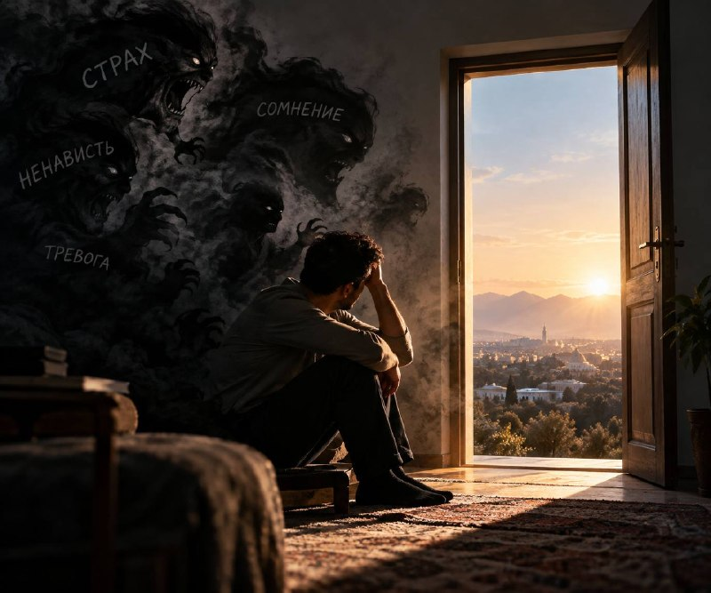
Уни нима тўсади? Кўпинча - реал муаммолар эмас, ўзимиз ўйлаб топган хаёллардан қўрқамиз. «Бўлмайди». «Қандай бўлар экан?». «У мени тушунмайди». «Улар менга қарши». «Барибир…
Уруғ ерга тушиб чечак бўлди,
— Алишер Навоий
Қурт жондан кечиб ипак бўлди.
Лола тухмича ғайратинг йўқми?
Пилла қуртича ҳимматинг йўқми?
Янги мақолалар биринчи бўлиб Telegram каналда чиқади. Маъруза ёки мастер-класс учун таклиф қилмоқчи бўлсангиз ҳам канал орқали боғланинг.
@umidkhudayberdiev